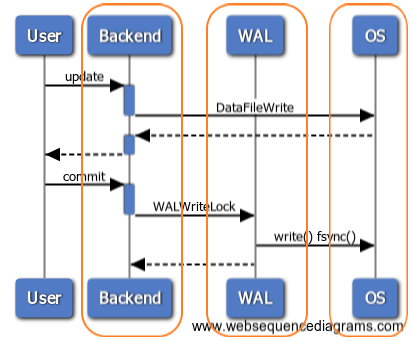
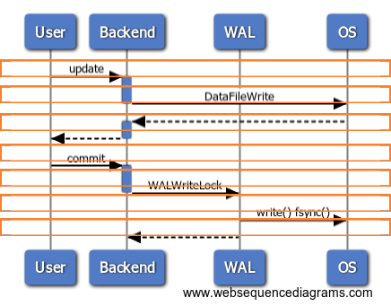

This was first published on https://www.dbi-services.com/blog/pgsentinel-the-sampling-approach-for-postgresql/ (2018-07-12)
Republishing here for new followers. The content is related to the versions available at the publication date.
.
Here is the first test I did with the beta of pgSentinel. This Active Session History sampling is a new approach to Postgres tuning. For people coming from Oracle, this is something that has made our life a lot easier to optimize database applications. Here is a quick example showing how it links together some information that are missing without this extension.
The installation of the extension is really easy (nore details on Daniel’s post):
cp pgsentinel.control /usr/pgsql-10/share/extension
cp pgsentinel--1.0.sql /usr/pgsql-10/share/extension
cp pgsentinel.so /usr/pgsql-10/lib
and declare it in postgresql.conf
grep -i pgSentinel $PGDATA/postgresql.conf
shared_preload_libraries = 'pg_stat_statements,pgsentinel'
#pgsentinel_ash.pull_frequency = 1
#pgsentinel_ash.max_entries = 1000000
and restart:
/usr/pgsql-10/bin/pg_ctl restart
Then create the views in psql:
CREATE EXTENSION pgsentinel;
I was running PGIO (the SLOB method for PostgreSQL from Kevin Closson https://kevinclosson.net/)
Without the extension, here is what I can see about the current activity from the OS point of view, with ‘top -c’:
top - 21:57:23 up 1 day, 11:22, 4 users, load average: 4.35, 4.24, 4.16
Tasks: 201 total, 2 running, 199 sleeping, 0 stopped, 0 zombie
%Cpu(s): 27.6 us, 19.0 sy, 0.0 ni, 31.0 id, 19.0 wa, 0.0 hi, 3.4 si, 0.0 st
KiB Mem : 4044424 total, 54240 free, 282220 used, 3707964 buff/cache
KiB Swap: 421884 total, 386844 free, 35040 used. 3625000 avail Mem
PID USER PR NI VIRT RES SHR S %CPU %MEM TIME+ COMMAND
9766 postgres 20 0 440280 160036 150328 D 50.0 4.0 10:56.63 postgres: postgres pgio [local] SELECT
9762 postgres 20 0 439940 160140 150412 D 43.8 4.0 10:55.95 postgres: postgres pgio [local] SELECT
9761 postgres 20 0 440392 160088 150312 D 37.5 4.0 10:52.29 postgres: postgres pgio [local] SELECT
9763 postgres 20 0 440280 160080 150432 R 37.5 4.0 10:41.94 postgres: postgres pgio [local] SELECT
9538 postgres 20 0 424860 144464 142956 D 6.2 3.6 0:30.79 postgres: writer process
As I described in a previous post, PostgreSQL changes the title of the process to display the current operation. This looks interesting, but not very detailed (only ‘SELECT’ here) and very misleading because here I’m running PGIO with 50% updates. The ‘SELECT’ here is the user call. Not the actual SQL statement running.
We have more information from PG_STAT_ACTIVITY, but again only the top-level call is displayed, as I mentioned in a previous post:
select * from pg_stat_activity where pid=9766;
-[ RECORD 1 ]----+---------------------------------------------------------
datid | 17487
datname | pgio
pid | 9766
usesysid | 10
usename | postgres
application_name | psql
client_addr |
client_hostname |
client_port | -1
backend_start | 2018-07-12 21:28:46.539052+02
xact_start | 2018-07-12 21:28:46.542203+02
query_start | 2018-07-12 21:28:46.542203+02
state_change | 2018-07-12 21:28:46.542209+02
wait_event_type | IO
wait_event | DataFileWrite
state | active
backend_xid | 37554
backend_xmin | 37553
query | SELECT * FROM mypgio('pgio4', 50, 3000, 131072, 255, 8);
backend_type | client backend
Here, I know what the user is doing: a call to mypgio() started at 21:28:46. And I know which resources are involved on the system: DataFileWrite. But again the most important is missing, the link between the user call and the system resources. And you can only guess it here because you know that a SELECT do not write to datafiles. There’s something hidden in the middle, which is actually an UPDATE. Of course, we can see this UPDATE in PG_STAT_STATEMENTS. But there, it will not be linked with the current activity, the mypgio() call, nor the DataFileWrite wait event. And we also need some timing information to be able to see the database load over the time.
Here is where the pgSentinel extension fills the gap, providing:
select ash_time,pid,wait_event_type,wait_event,state,queryid,backend_type,top_level_query,query from pg_active_session_history order by ash_time desc,pid fetch first 10 rows only;
ash_time | pid | wait_event_type | wait_event | state | queryid | backend_type | top_level_query | query
-------------------------------+------+-----------------+---------------+--------+------------+----------------+----------------------------------------------------------+--------------------------------------------------------------------------
2018-07-12 21:57:22.991558+02 | 9761 | IO | DataFileWrite | active | 837728477 | client backend | SELECT * FROM mypgio('pgio2', 50, 3000, 131072, 255, 8); | SELECT sum(scratch) FROM pgio2 WHERE mykey BETWEEN 1065 AND 1320
2018-07-12 21:57:22.991558+02 | 9762 | IO | DataFileWrite | active | 1046864277 | client backend | SELECT * FROM mypgio('pgio3', 50, 3000, 131072, 255, 8); | SELECT sum(scratch) FROM pgio3 WHERE mykey BETWEEN 267 AND 522
2018-07-12 21:57:22.991558+02 | 9763 | IO | DataFileRead | active | 1648177216 | client backend | SELECT * FROM mypgio('pgio1', 50, 3000, 131072, 255, 8); | UPDATE pgio1 SET scratch = scratch + 1 WHERE mykey BETWEEN 1586 AND 1594
2018-07-12 21:57:22.991558+02 | 9766 | IO | DataFileWrite | active | 3411884874 | client backend | SELECT * FROM mypgio('pgio4', 50, 3000, 131072, 255, 8); | SELECT sum(scratch) FROM pgio4 WHERE mykey BETWEEN 3870 AND 4125
2018-07-12 21:57:21.990178+02 | 9761 | CPU | CPU | active | 837728477 | client backend | SELECT * FROM mypgio('pgio2', 50, 3000, 131072, 255, 8); | SELECT sum(scratch) FROM pgio2 WHERE mykey BETWEEN 13733 AND 13988
2018-07-12 21:57:21.990178+02 | 9762 | IO | DataFileRead | active | 1046864277 | client backend | SELECT * FROM mypgio('pgio3', 50, 3000, 131072, 255, 8); | SELECT sum(scratch) FROM pgio3 WHERE mykey BETWEEN 4135 AND 4390
2018-07-12 21:57:21.990178+02 | 9763 | IO | DataFileWrite | active | 2994234299 | client backend | SELECT * FROM mypgio('pgio1', 50, 3000, 131072, 255, 8); | SELECT sum(scratch) FROM pgio1 WHERE mykey BETWEEN 4347 AND 4602
2018-07-12 21:57:21.990178+02 | 9766 | CPU | CPU | active | 3411884874 | client backend | SELECT * FROM mypgio('pgio4', 50, 3000, 131072, 255, 8); | SELECT sum(scratch) FROM pgio4 WHERE mykey BETWEEN 14423 AND 14678
2018-07-12 21:57:20.985253+02 | 9761 | IO | DataFileWrite | active | 837728477 | client backend | SELECT * FROM mypgio('pgio2', 50, 3000, 131072, 255, 8); | SELECT sum(scratch) FROM pgio2 WHERE mykey BETWEEN 129 AND 384
2018-07-12 21:57:20.985253+02 | 9762 | IO | DataFileWrite | active | 1046864277 | client backend | SELECT * FROM mypgio('pgio3', 50, 3000, 131072, 255, 8); | SELECT sum(scratch) FROM pgio3 WHERE mykey BETWEEN 3313 AND 3568
(10 rows)
Everything is there. The timeline where each sample links together the user call (top_level_query), the running query (queryid and query – which is the text with parameter values), and the wait event (wait_event_type and wait_event).
Here is, on one sample, what is currently available in the beta version:
select * from pg_active_session_history where pid=9766 order by ash_time desc fetch first 1 rows only;
-[ RECORD 1 ]----+-----------------------------------------------------------------------
ash_time | 2018-07-12 21:57:23.992798+02
datid | 17487
datname | pgio
pid | 9766
usesysid | 10
usename | postgres
application_name | psql
client_addr |
client_hostname |
client_port | -1
backend_start | 2018-07-12 21:28:46.539052+02
xact_start | 2018-07-12 21:28:46.542203+02
query_start | 2018-07-12 21:28:46.542203+02
state_change | 2018-07-12 21:28:46.542209+02
wait_event_type | IO
wait_event | DataFileExtend
state | active
backend_xid | 37554
backend_xmin | 37553
top_level_query | SELECT * FROM mypgio('pgio4', 50, 3000, 131072, 255, 8);
query | UPDATE pgio4 SET scratch = scratch + 1 WHERE mykey BETWEEN 700 AND 708
queryid | 1109524376
backend_type | client backend
Then, what do we do with this? This is a fact table with many dimensions. And we can drill down on the database activity.
A quick overview of the load shows that I have, on average, 4 foreground sessions running for my user calls, and very low vacuuming activity:
postgres=# select backend_type
postgres-# ,count(*)/(select count(distinct ash_time)::float from pg_active_session_history) as load
postgres-# from pg_active_session_history
postgres-# group by backend_type
postgres-# ;
backend_type | load
-------------------+--------------------
client backend | 4.09720483938256
autovacuum worker | 0.07467667918231
(2 rows)
I’ll show in a future post how to query this view to drill down into the details. For the moment, here is a short explanation about the reason to go to a sampling approach.
Here is an abstract sequence diagram showing some typical user calls to the database. Several components are involved: CPU for the backed process, or for background processes, the OS, the storage… Our tuning goal is to reduce the user call duration. And then to reduce or optimize the work done in the different layers. With the current statistics available on PostgreSQL, like PG_STAT_ACTIVITY or PG_STAT_STATEMENTS, or available from the OS (strace to measure system call duration) we have a vertical approach on the load. We can look at each component individually: 
This is basically what we did on Oracle before ASH (Active Session History) was introduced in 10g, 12 years ago. The activity sampling approach takes an orthogonal point of view. Rather than cumulating statistics for each components, it looks at what happens on the system at specific point in times, across all components. We don’t have all measures (such as how many execution of a query) but only samples. However, each sample gives a complete view from the user call down to the system calls. And 1 second samples are sufficient to address any relevant activity, without taking too much space for short retention. For each sample, we cover all layers end-to-end: 
This horizontal approach makes the link between the user calls (the user perception of the database performance) and the system resources where we can analyze and optimize. With this, we can ensure that our tuning activity always focuses on the problem (the user response time) by addressing the root cause on the right component.
{kind=link}
{kind=link}